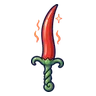
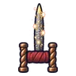
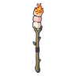

แม่มดเทียนไข
มอนธาตุไฟ Lv 30–38
เจอที่
| แมพ | โซน | Lv | ภูมิภาค |
|---|---|---|---|
| สุสานเก่าหลังเนิน | 30–38 | ป่ากองไฟ | |
| สุสานเก่าหลังเนิน | สุสานหลวงเก่า | 36–38 | ป่ากองไฟ |
| สวนรูปปั้นร้องไห้ | 30–38 | ป่ากองไฟ | |
| บ้านผู้เฝ้าสุสาน | 30–38 | ป่ากองไฟ | |
| บ้านผู้เฝ้าสุสาน | หน้าบ้านผู้เฝ้า | 36–38 | ป่ากองไฟ |
ค่าสถานะตามเลเวล
| Lv | HP | ATK | DEF | MDEF | EXP | Job |
|---|---|---|---|---|---|---|
| 30 | 2,793 | 38–58 | 10 | 10 | 46 | 35 |
| 34 | 3,830 | 46–69 | 11 | 11 | 51 | 38 |
| 38 | 5,197 | 55–83 | 12 | 13 | 56 | 42 |
ตีด้วยธาตุไหนดี
แรงขึ้น: น้ำ ×1.5 พิษ ×1.25
เบาลง: ดิน ×0.5 ไฟ ×0.25
วัตถุดิบที่ดรอป
| ของ | โอกาส | |
|---|---|---|
| ขี้ผึ้งแม่มด | 55% | 1 ชิ้น (15% ได้ 2) |
อุปกรณ์ที่ดรอป (9)
| ของ | โอกาส |
|---|---|
| 0.25% | |
| 0.25% | |
| 0.25% | |
| 0.12% | |
 ดาบคู่พริกแดง | 0.06% |
 คาทาร์ไฟเย็น | 0.06% |
| 0.06% | |
 คทาไม้ปิ้งมาร์ชเมลโลว์ | 0.06% |
| 0.06% |
สกิล
ม่านเวท (Lv 25+) · ม่านเวท (Lv 60+) · วาร์ป (Lv 60+)